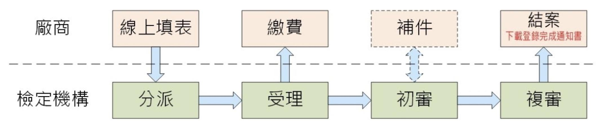

完成登錄產品查詢
-
產品申報登錄流程說明
廠商於機械設備器具安全資訊網(以下簡稱本系統)申請產品申報登錄，需經過下列流程 
- 線上填表：於產品申報登錄清單頁面點選左上方「新增 產品申報登錄」進入線上填表頁面，依所需申報登錄的產品資訊於頁面相關欄位填入或選取內容，例如機械種類、產品名稱、型式等。填寫完成即可送出申請。
- 繳費：機構受理後，本系統將發送繳款訊息通知聯絡人繳交相關規費。
- 補件：機構審核過程發現案件資料需修正或提供相關文件，本系統將發送補件訊息通知聯絡人，廠商可登入本系統進行線上補件。
- 結案：機構審核通過後，本系統將發送結案通過訊息通知聯絡人下載列印登錄完成通知書。
-
產品照片上傳失敗建議方式
系統可提供上傳產品照片，格式包括 PNG、JPG、BMP、GIF等，若遇上傳失敗情形，請嘗試使用小畫家開啟圖檔，無需對圖檔進行編修，直接「另存新檔」，格式可為 PNG、JPG、BMP、GIF擇一選取，儲存完成後請再重新上傳試試。
-
第三項說明
...